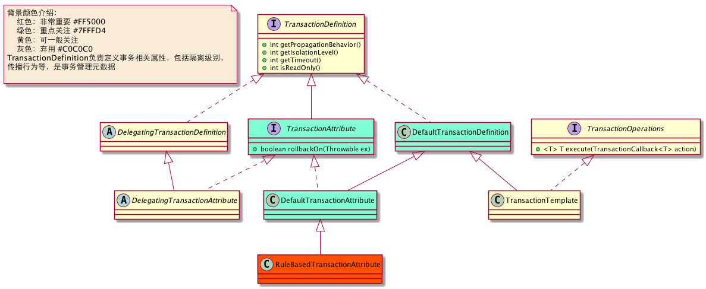
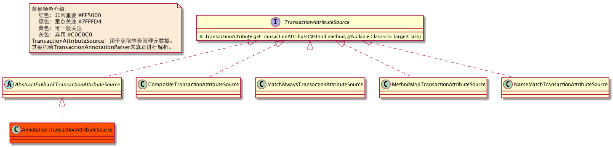
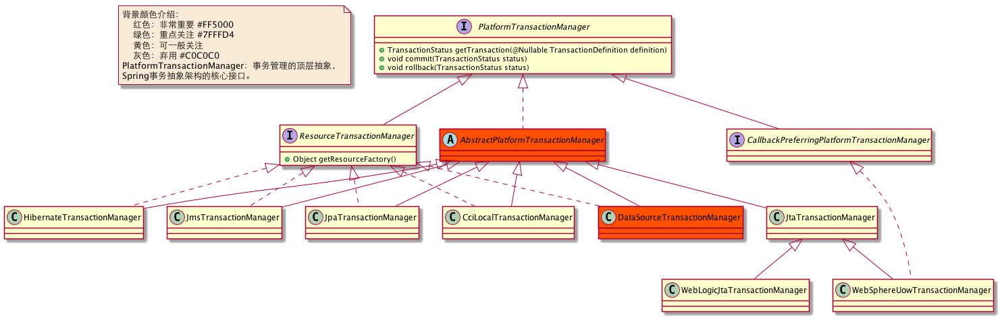
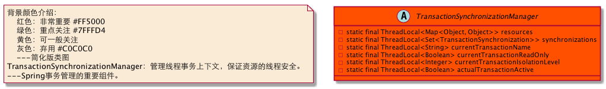
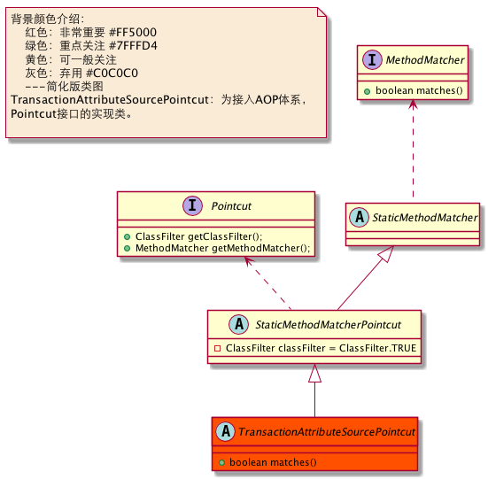
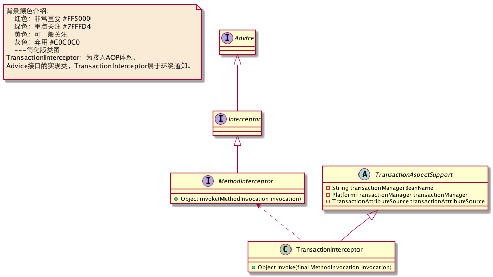
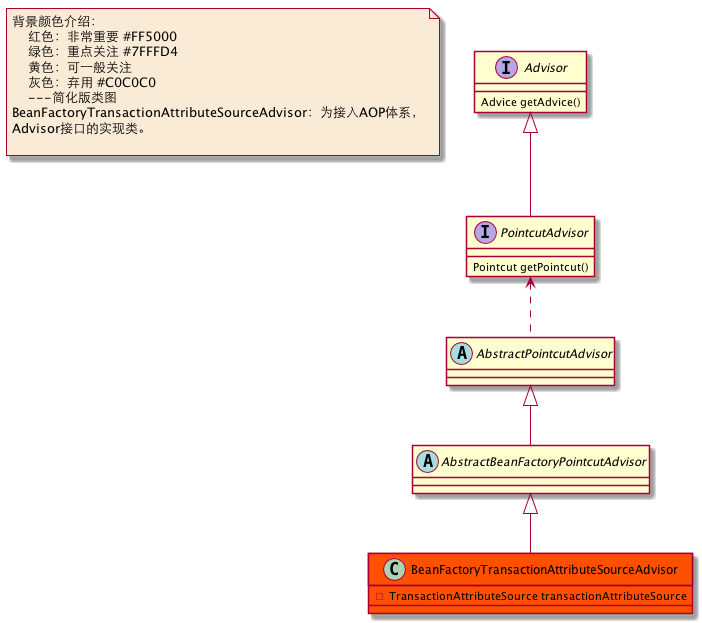
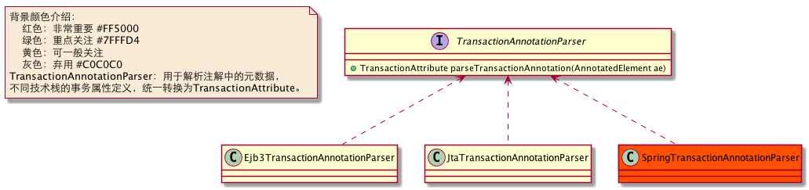
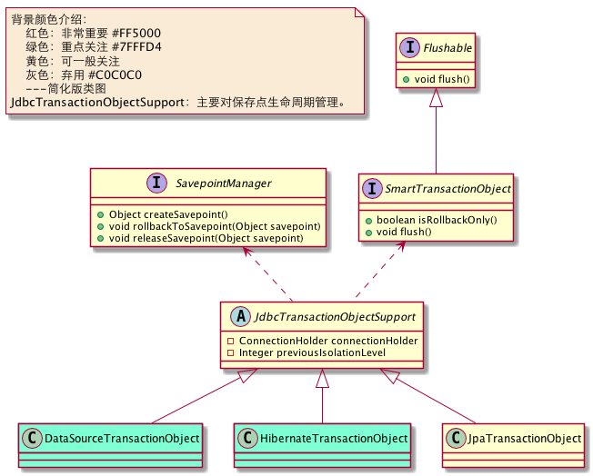
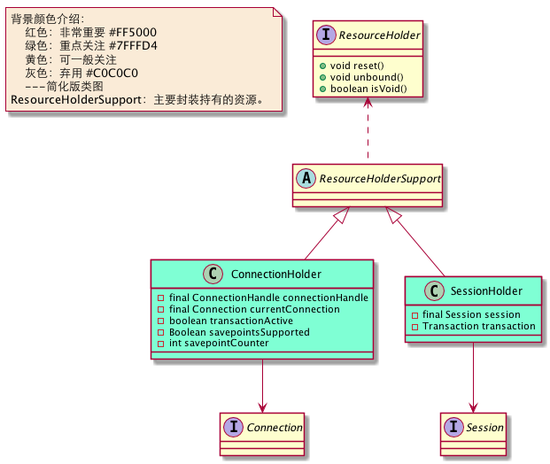

Spring事务基础设施介绍
Spring在事务实现过程中抽象出来以下几个数据模型，用于支撑整个事务架构。
一.核心组件
1.TransactionDefinition
TransactionDefinition负责定义事务相关属性，包括隔离级别，传播行为等，是事务管理元数据。我们通过@Transaction声明事务时，最终都转换成TransactionDefinition来表示，类似与BeanDefinition的味道。
{kind=link}

2.TransactionStatus
TransactionStatus表示整个事务处理过程中的事务状态，我们能够通过它对事务提交进行干预。
{kind=link}

3.PlatformTransactionManager
PlatformTransactionManager管理事务的顶层接口，定义提交/回滚操作，具体管理时委托给子类来实现。
{kind=link}

4.TransactionSynchronizationManager
TransactionSynchronizationManager：管理线程事务上下文，保证资源的线程安全，是Spring事务管理的重要组件。
{kind=link}

二. AOP套件
1.TransactionAttributeSourcePointcut
TransactionAttributeSourcePointcut：为接入AOP体系，Pointcut接口的实现类。大家可能好奇为什么看到TransactionAttributeSourcePointcut是抽象接口，具体实现在哪，在BeanFactoryTransactionAttributeSourceAdvisor中，以匿名内部类方式提供的。
{kind=link}

2.TransactionInterceptor
TransactionInterceptor：为接入AOP体系，Advice接口的实现类，TransactionInterceptor属于环绕通知。
{kind=link}

3.BeanFactoryTransactionAttributeSourceAdvisor
BeanFactoryTransactionAttributeSourceAdvisor：为接入AOP体系，Advisor接口的实现类。
{kind=link}

三. 其他组件支持
1.TransactionAttributeSource
TransactionAttributeSource用于获取方法的TransactionDefinition信息。
2.TransactionAnnotationParser
TransactionAnnotationParser用于解析注解中的元数据，不同技术栈的事务属性定义，统一转换为TransactionAttribute。
{kind=link}

3.JdbcTransactionObjectSupport
JdbcTransactionObjectSupport主要对保存点生命周期管理。
{kind=link}

4.ResourceHolderSupport
ResourceHolderSupport主要封装持有的资源。
{kind=link}

有了以上诸多组件的支持，再加上Spring AOP基础设施的支持，Spring实现了整个事务的管理。那我们一探究竟到底怎么回事：Spring事务管理原理。
快速导航：